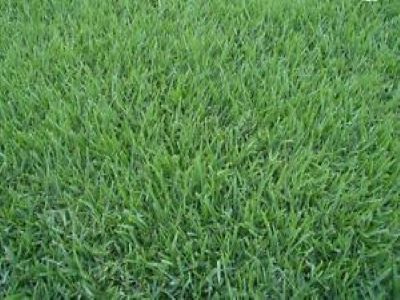
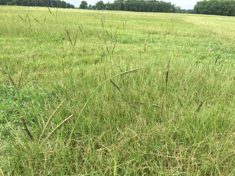
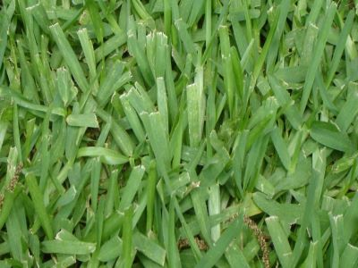
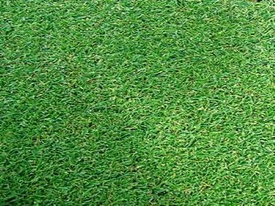
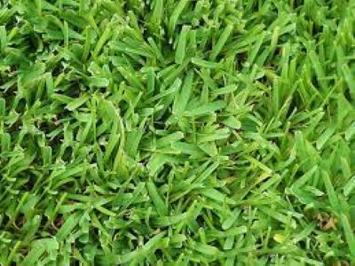
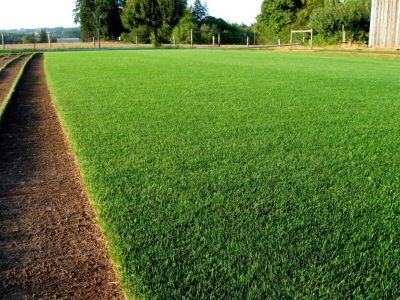

Esta breve guía sobre los tipos de césped los ayudara a conocer los diferentes tipos que existen y cuál deberíamos elegir según nuestras necesidades.
Tipos de cesped
Elegir el cesped es la tarea mas importante , ya que un cesped mal elegido puede derribar todo lo planeado.Hay que tomar en cuenta no solo el para que sino que tambien las características de nuestro suelo, el clima o cualquier otra cosa pueden inferir en nuestra seleccion y que necesitemos una variedad en concreto.¿para qué quiero usar mi césped,cómo lo voy a mantener, como afectara el clima? son los principales problemas que debemos solucionar. El primer hay que tener presente su resistencia, tanto las condiciones del suelo como ambientales.Tomando esto en cuenta,el cespedse puede dividir en dos tipos según el clima:
- Cesped de climas cálidos: que suelen tener de hoja gruesa. Como pueden ser la Cynodon dactylon, Paspalum notatum, Pennisetum clandestinum
- Cesped de climas fríos y no tan fríos: en cambio estos suelen ser de hoja fina.Como por ejemplo, Agrostis estolonifera, Festuca arundinacea y Lolium perenne
Cesped clima calido



Cesped clima frio



Usos del cesped
Dependiendo del uso que le demos a nuestro cesced , podemos dividir esta seccion en tres usos distintos
- uso decorativo: para una función ornamental, tenemos que elegir variedades de hoja muy fina, tupida, densa y el nivel de cuidados que exige es bastante alto
- uso deportivo: Lo bueno que tiene es que se disfruta no sólo con la vista, sino que resiste lo que queramos hacer con élAdemás se trata de variedades más resistentes a las plagas
- uso familia: similar al deportivo, es decir se necesita de un cesped resisten al uso cotidiano, para moverte en el, para descansar sobre el y demas activiades . Tiene que ser resistente
Cuando sembrar
Hay una norma que en el fondo está regida por el sentido común: huye del frío y del calor a la hora de hacer la siembra. La primavera y el inicio del otoño son los momentos propicios para llevar acabo la siembre ya que son los meses más adecuados para obtener de un buen césped natural. Hay que preparar bien la tierra, airearla y regarla para mejor acentuacion